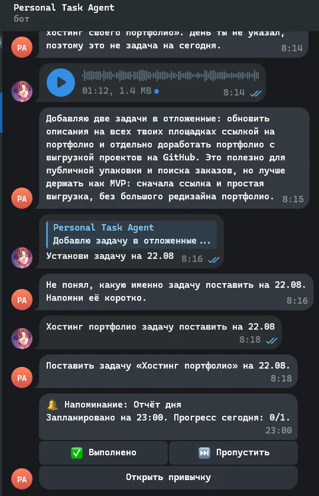
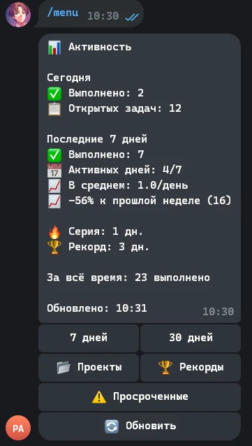

Telegram bot · Local task system
Personal Task Agent
Личный агент для управления задачами, проектами, идеями, заметками и привычками в Obsidian-хранилище. Помогает превратить голосовой или текстовый ввод в контролируемые изменения Markdown-файлов.
- Принимает голосовые и текстовые сообщения в Telegram
- Локально расшифровывает речь с faster-whisper
- Показывает diff и ждёт явного Apply или Cancel
- Проверяет пути и содержимое, хеш файла и создаёт backup
- Ведёт привычки, ежедневные сводки и статистику без базы данных
Pythonpython-telegram-botfaster-whisperAPSchedulerObsidian / Markdown

